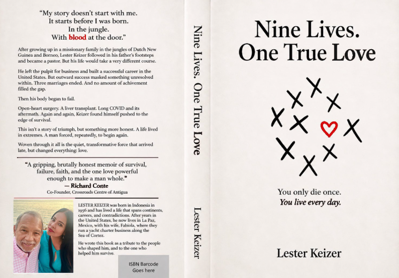

Travel Tips Consejos de Viaje

Spread the Story Comparte la Historia
Inside the Story Dentro de la Historia
A childhood survival in the jungles of Borneo Una infancia de supervivencia en las selvas de Borneo
Poisoned arrows and tribal warfare Flechas envenenadas y guerras tribales
An unexpected friendship with Eric Clapton Una amistad inesperada con Eric Clapton
Boardrooms connected to Donald Trump Salas de juntas conectadas con Donald Trump
Open-heart surgery that should have ended it all Una cirugía de corazón abierto que debió terminarlo todo
Liver cancer and a life-saving transplant Cáncer de hígado y un trasplante que salvó su vida
A private battle with depression that nearly won Una batalla privada contra la depresión que casi ganó
"So many memoirs flatten a life into a highlight reel. Yours doesn't flinch."
"Tantas memorias reducen una vida a un resumen de mejores momentos. La tuya no se aparta de nada."
Author Spotlight Reflector del Autor
New Release · September 2, 2026 Nuevo Lanzamiento · 2 de Septiembre, 2026
I Died Nine Times. Love Brought Me Back. Morí Nueve Veces. El Amor Me Trajo de Vuelta.
My father survived a Japanese prison camp. I survived the jungles of New Guinea and Borneo, open-heart surgery, liver cancer, a liver transplant, depression, and more close calls than I can count. I buried dreams, damaged relationships, and often got in my own way. This is the story of a jungle boy who should have died many times — but didn't. More importantly, it is the story of how faith, forgiveness, and one remarkable woman taught me that surviving is not the same as living — and that one true love can arrive even after a lifetime of wrong turns.
Mi padre sobrevivió a un campo de prisioneros japonés. Yo sobreviví a las selvas de Nueva Guinea y Borneo, una cirugía de corazón abierto, cáncer de hígado, un trasplante de hígado, depresión, y más momentos límite de los que puedo contar. Enterré sueños, dañé relaciones, y muchas veces fui mi propio obstáculo. Esta es la historia de un niño de la selva que debió haber muerto muchas veces — pero no lo hizo. Más importante aún, es la historia de cómo la fe, el perdón y una mujer extraordinaria me enseñaron que sobrevivir no es lo mismo que vivir — y que el amor verdadero puede llegar incluso después de toda una vida de caminos equivocados.
Why This Book Matters Por Qué Este Libro Importa
"What a gift you've given me — and I mean that in every sense of the word. I've been reading your memoir with the kind of attention I rarely give anything anymore. You haven't just told your story; you've drawn the reader into it. The writing is masterful — unhurried where it needs to breathe, gripping where the stakes are highest. That's not an easy balance, but you found it. What moved me most was the full honesty of it — the mountaintop moments and the deep valley seasons both. So many memoirs flatten a life into a highlight reel. Yours doesn't flinch. And that's precisely what makes it inspiring rather than merely impressive. Journeying alongside you through these pages reminded me of what a life of genuine faith and courage actually looks like from the inside. I came away both humbled and encouraged."
"Qué regalo me has dado — y lo digo en todo el sentido de la palabra. He estado leyendo tus memorias con el tipo de atención que rara vez le dedico a algo en estos días. No solo contaste tu historia; lograste que el lector se sumergiera en ella. La escritura es magistral — pausada donde necesita respirar, intensa donde la tensión es más alta. Ese no es un equilibrio fácil de lograr, pero tú lo encontraste. Lo que más me conmovió fue su honestidad absoluta — tanto los momentos en la cima como las temporadas en el valle más profundo. Tantas memorias reducen una vida a un resumen de mejores momentos. La tuya no se aparta de nada. Y es precisamente eso lo que la hace inspiradora y no solo impresionante. Acompañarte a través de estas páginas me recordó cómo se ve, desde adentro, una vida de fe y valentía genuinas. Terminé sintiéndome a la vez humilde y motivado."
From the Blog Desde el Blog
Travel Tips Consejos de Viaje

Yacht Tours Tours en Yate

Destinations Destinos